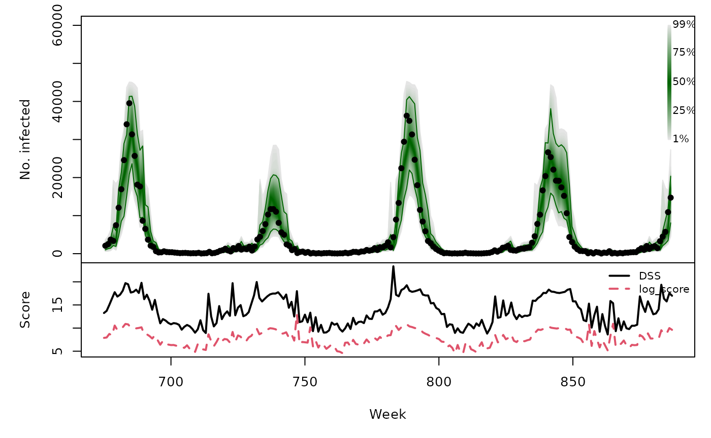

Forecasting Swiss ILI counts using kcde::kcde
Sebastian Meyer
2018-09-03
Source:vignettes/extra/CHILI_kcde.Rmd
CHILI_kcde.RmdIn this vignette, we use forecasting methods provided by:
library("kcde")Ray E (????). kcde: Kernel conditional density estimation with flexible kernel specifications. R package version 0.0.0.9000, https://github.com/reichlab/kcde/tree/6f8c8e5c82ec63e2e8f8bc2a143ec75460d86ab4.
Modelling
Note: we use a log-transformation of the CHILI counts in kcde.
Configuring kcde() is quiet lengthy and not shown here (see the vignette sources for details).
We used 3 cores in parallel. Fitting the full bandwidth KCDE would take several days, so we used the diagonal bandwidth parametrization.
kcdefit$runtime / 60## user system elapsed
## 18.7790167 0.3864667 6.7792500Unfortunately, the estimation function kcde() just returns a list without a dedicated class. It is unclear to me how to summarize the model fit or extract fitted values …
One-week-ahead forecasts
We compute 213 one-week-ahead forecasts from 2012-W48 to 2016-W51 (the OWA period).
The code is again lengthy and not shown here (see the sources for details).
Computing the 213 forecasts took 4.6 minutes (single core).
The PIT histogram is based on the pointwise ECDF of the samples from the predictive distributions.

## DSS log_score AE
## Min. : 8.613 Min. : 4.505 Min. : 1.0
## 1st Qu.:11.018 1st Qu.: 6.521 1st Qu.: 99.0
## Median :13.266 Median : 7.643 Median : 339.5
## Mean :13.794 Mean : 7.801 Mean : 956.1
## 3rd Qu.:16.850 3rd Qu.: 9.086 3rd Qu.: 910.0
## Max. :23.359 Max. :13.011 Max. :10872.0
Long-term forecasts
We would need to rerun kcde() and subsequent predictions for each of the three different training periods with prediction_horizon varying from 1 to 30. Based on the runtime of the above computations for a single training period and prediction horizon, computing all long-term forecasts is estimated to take approximately 17.1 hours. This is far beyond the runtimes of the alternative prediction approaches, so we skip long-term forecasts with kcde.